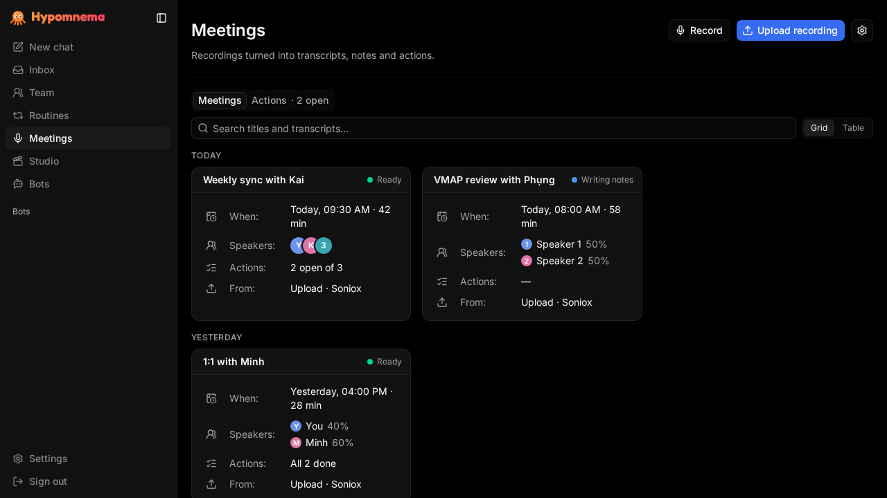
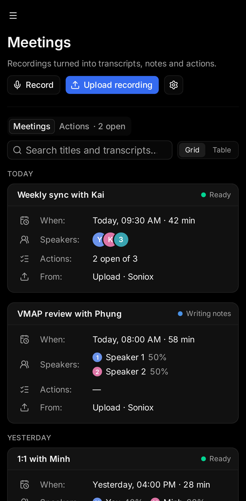
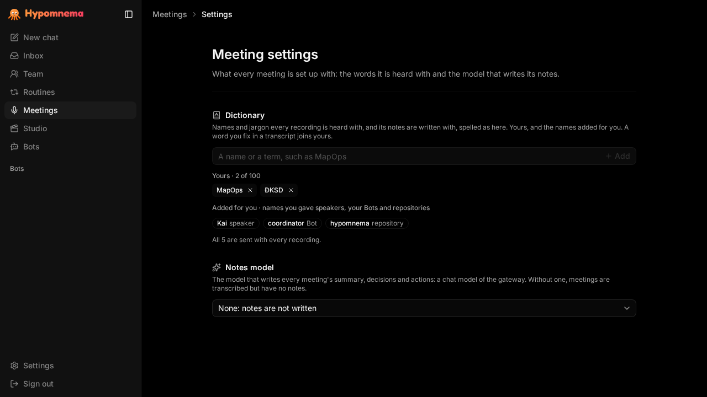
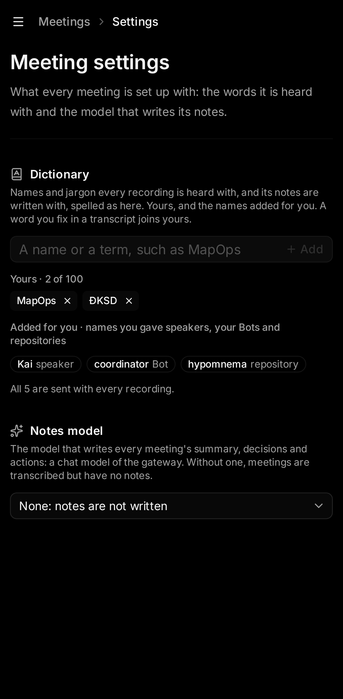
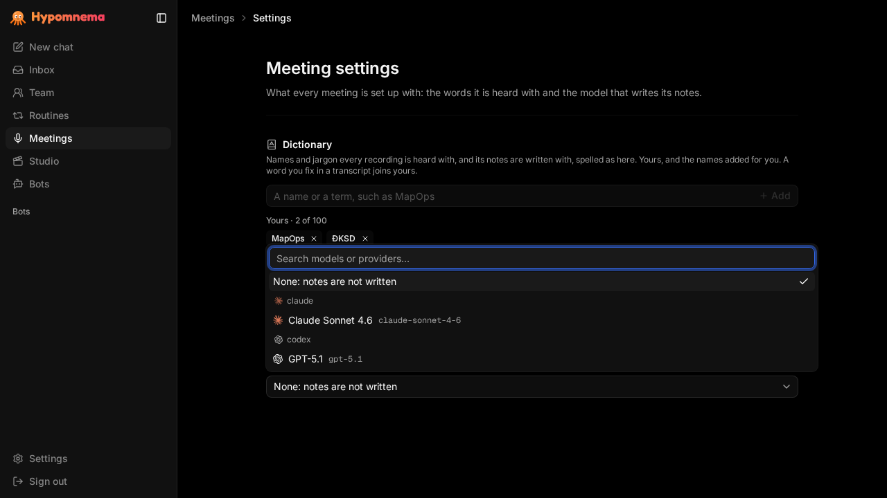
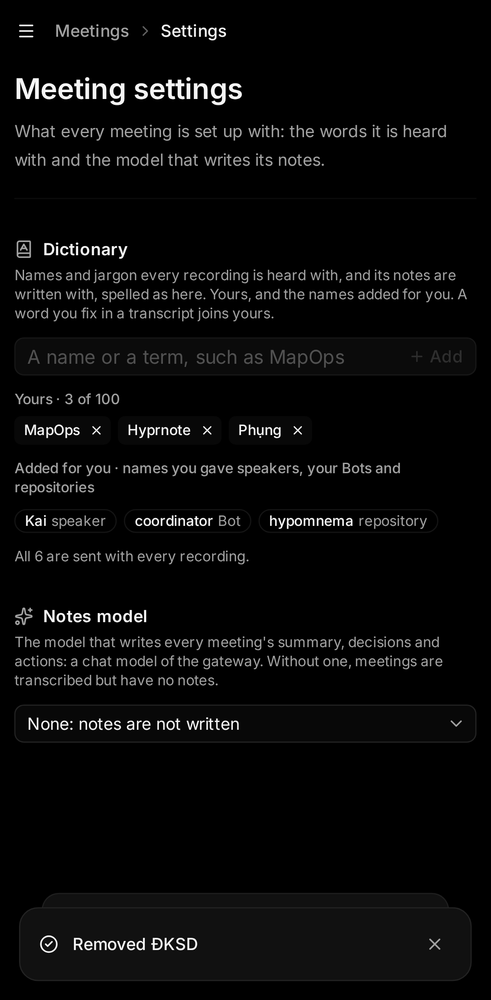
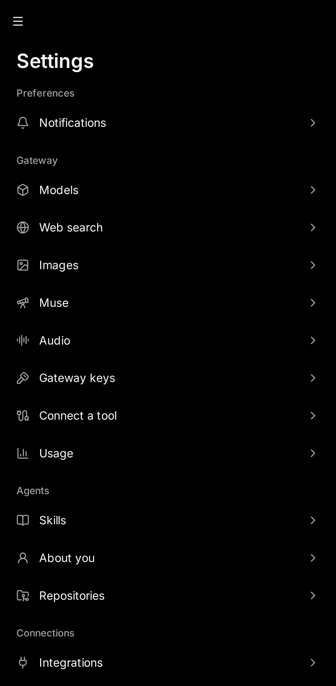

Issue #1121: meeting settings behind a gear on the Meetings page
Meetings page with the gear (desktop)
Meetings page with the gear (phone)
Meeting settings: Dictionary and Notes model (desktop)
Meeting settings (phone)
Notes model picker open
Dictionary after edits (phone)
Settings list on a phone: no Meetings group
Settings sidebar: no Meetings group